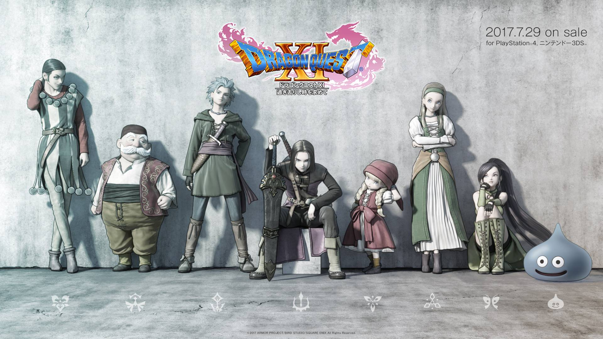

やじまのプロフィール

（画像についてひとこと：PCのホーム画像です。）
所属など
理工学部 物理学専攻
塾講師 家庭教師のアルバイトをしていました。（現在はしていない）
趣味や属性
サッカー、フットサルが好きです。（やれる機会があまりない,,,）
運転と旅行が好きなので、よく車で遠出してます。
ゲームもよくやります。一人だとRPG（ドラクエ等）、友達とソシャゲといった感じです。
周りからは感情と思考が読めないと言われてしまいます。この機にうまく表現をできるようになれたらなと思います。
好きなサッカー選手トップ３
私の好きなサッカー選手のトップ３です！
- ディ・マリア（アルゼンチン）
- ルカ・モドリッチ（クロアチア）
- マルセロ（ブラジル）
その他
使用PC
Windows
PC利用経験や、普段の使い方
高校の研究発表等でExcel、powerpointに触れ始めて、大学入学と同時に本格的に使用開始。
課題、プログラミング、youtube、映画・アニメ、ゲーム（モニターとして利用）などいろいろ使ってます。
自分の強みや弱みなど
強み：慎重に物事進められます
試して修正しての繰り返しが得意です
弱み：人に頼れない
TECH-BASE参加にあたり、意気込み
プログラミングで稼げるようになることを目標にしています！助け合いながら頑張りたいと思っているのでよろしくお願いします！
このページのTOPへ ／ ググる